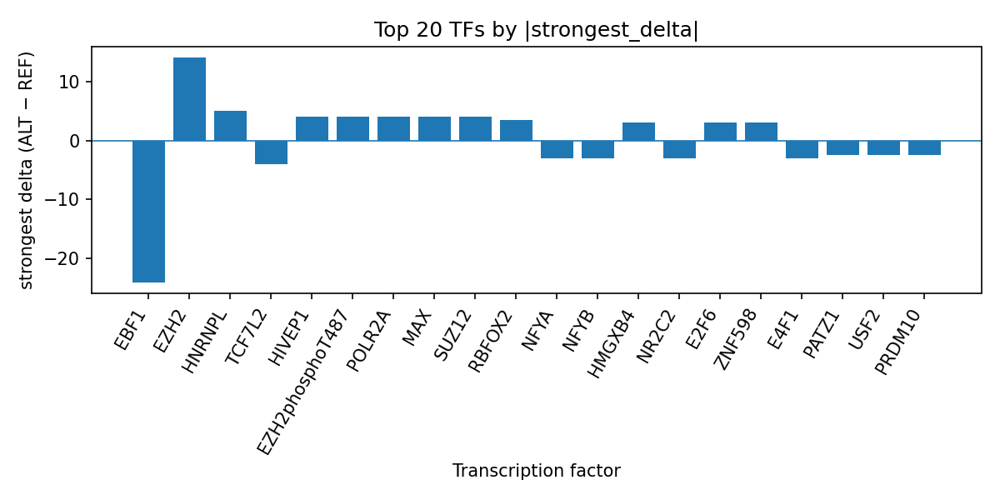

Author: snv-tf-researcher
Focal segmental glomerulosclerosis (FSGS) is a genetically heterogeneous podocytopathy for which genome-wide studies and sequencing have implicated both monogenic and polygenic contributors to disease risk [1-4]. Here, we prioritized rs5732 (chr16:23186241 A>G), a GWAS-selected variant associated with FSGS, and interpreted AlphaGenome ChIP-seq predictions to identify transcription factors whose binding may be altered by the ALT allele. The variant is annotated as a 5′ UTR and non-coding transcript exon variant, and the computational predictions suggest a mixed regulatory signature dominated by inhibited EBF1 binding and promoted EZH2, POLR2A, MAX, and related tracks. These results are computational predictions, not experimental measurements, and therefore require functional validation. The accompanying run tables and figure outputs are referenced to the file top_tf_effects.tsv and the generated figures in this analysis.
Focal segmental glomerulosclerosis is a heterogeneous clinicopathologic entity with substantial genetic contribution, including monogenic disease, high-penetrance variants, and broader polygenic architecture [1-4]. Prior genome-wide association studies and genetic analyses have reported associations involving immune-related loci and kidney-development pathways, underscoring that inherited variation may help stratify FSGS risk and related nephrotic syndromes [2-6]. Reviews of glomerular genetics further emphasize that integrating GWAS with functional genomics can prioritize candidate regulatory mechanisms for follow-up [3,4].
At the same time, FSGS remains biologically and clinically diverse, with recurrent disease, podocyte injury, and transplant-related phenotypes all described in the literature [5-8]. Because noncoding variants can influence transcription factor occupancy and downstream gene regulation, computational sequence-to-function models may help nominate plausible regulatory effects for disease-associated SNVs. In this manuscript, we interpret AlphaGenome TF ChIP-seq predictions for rs5732, a GWAS-selected FSGS-associated variant, to identify transcription factors whose predicted binding is most altered by the ALT allele. These predictions are computational and do not substitute for experimental assays.
The candidate variant was rs5732 (chr16:23186241, A>G; risk allele rs5732-G), selected by effect size for focal segmental glomerulosclerosis (p = 7 × 10^-8; abs_beta = 10.8). The reported consequence terms were 5_prime_UTR_variant and non_coding_transcript_exon_variant. No nearest gene was provided in the input data.
AlphaGenome TF ChIP-seq predictions were used to estimate the effect of the ALT allele relative to the REF allele on transcription factor binding across available tracks. These are computational predictions, not direct biochemical measurements. To summarize model output, transcription factors were ranked by absolute predicted delta, and the top effects were organized into the run output table top_tf_effects.tsv. For each factor, we considered the number of tracks, the strongest track, the strongest biosample, the signed strongest delta, and the counts of promoted versus inhibited tracks.
A targeted PubMed literature list provided in the run data was used to contextualize the variant within known FSGS genetics and podocytopathy biology. Only the provided literature entries were cited. The workflow for variant interpretation, TF summarization, and manuscript assembly is shown in the pipeline overview (Figure 1).
Figure 1. End-to-end workflow used in this run, from GWAS variant selection and annotation through AlphaGenome TF ChIP-seq prediction summarization and literature-supported manuscript synthesis. The schematic also highlights that the output table top_tf_effects.tsv anchors the reported TF rankings.
The AlphaGenome predictions for rs5732 suggested the strongest negative effect on EBF1 binding, with a maximal signed delta of -24.0 in GM12878 and only one inhibited track. In contrast, EZH2 showed the largest promoted signal among the listed factors, with eight tracks and a strongest delta of 14.0 in astrocytes. Additional promoted factors included HNRNPL, HIVEP1, EZH2phosphoT487, POLR2A, MAX, SUZ12, RBFOX2, ZNF598, E2F6, HMGXB4, and CTBP2, while several factors were inhibited, including TCF7L2, NR2C2, E4F1, NFYA, NFYB, ZNF398, SMC3, HDGF, PATZ1, PRDM10, CLOCK, USF2, ZNF341, STAT3, CTCF, NFIB, and YY2. The full ranked summary is captured in top_tf_effects.tsv, and the top TF-level effects are visualized in Figure 2.

Figure 2. Top transcription factors prioritized at rs5732 by absolute predicted ALT-vs-REF binding delta from AlphaGenome TF ChIP-seq tracks. Positive bars indicate predicted promotion and negative bars indicate predicted inhibition; each bar reflects the strongest signed delta observed for that factor across available tracks.
Overall, the predicted signal was mixed, with a notable inhibitory effect on EBF1 and a broader set of positive predictions involving EZH2, POLR2A, MAX, and chromatin-associated or transcriptional regulators. Because these are computational predictions, they should be interpreted as prioritization signals rather than direct evidence of allele-dependent binding.
The rs5732 predictions prioritize transcriptional regulators with both activating and repressive signatures, suggesting that this noncoding FSGS-associated variant may alter local regulatory context rather than producing a single uniform effect. The strong predicted inhibition of EBF1 and the broad predicted promotion of EZH2, POLR2A, MAX, and SUZ12 are consistent with a potentially complex regulatory architecture, but the model output alone cannot establish mechanism. Experimental validation will be required to determine whether these predicted changes reflect altered TF occupancy, chromatin state, or indirect sequence-context effects.
This computational interpretation fits within a broader literature showing that FSGS has a heterogeneous genetic basis and that integrating genetic association with functional genomics can help prioritize candidate variants and pathways [3,4]. Prior studies also indicate that FSGS-related genetic signals may overlap with immune regulation, podocyte biology, and kidney developmental programs [2,5-8]. The present analysis adds a variant-level, TF-oriented prioritization for rs5732, which may help guide downstream experimental testing in relevant cellular systems.
This study has several important limitations. First, AlphaGenome outputs are computational predictions and not direct measurements of TF binding or transcriptional activity; experimental validation is required. Second, the variant was selected by effect size and may be in linkage disequilibrium with the true causal variant, so the prioritized signals should not be interpreted as definitive causal evidence. Third, no nearest gene was provided in the input data, limiting direct gene-level interpretation. Fourth, the literature context is limited to the provided PubMed records, and no additional external studies were used. Finally, the predictions are track-based and biosample-specific, so biological relevance will depend on the extent to which the assayed cell contexts overlap with the relevant kidney cell types.
Caparali EB, De Gregorio V, Barua M. Genetic Causes of Nephrotic Syndrome and Focal and Segmental Glomerulosclerosis. Adv Kidney Dis Health. 2024;31(4):309-316. PMID: 39084756. doi:10.1053/j.akdh.2024.04.001
Durand A, Winkler CA, Vince N, Douillard V, Geffard E, Binns-Roemer E, et al. Identification of Novel Genetic Risk Factors for Focal Segmental Glomerulosclerosis in Children: Results From the Chronic Kidney Disease in Children (CKiD) Cohort. Am J Kidney Dis. 2023;81(6):635-646.e1. PMID: 36623684. doi:10.1053/j.ajkd.2022.11.003
Wu MY, Chen YC, Chiu IJ, Wu MS. Genetic insight into primary glomerulonephritis. Nephrology (Carlton). 2022;27(8):649-657. PMID: 35672576. doi:10.1111/nep.14074
Downie ML, Gupta S, Chan MMY, Sadeghi-Alavijeh O, Cao J, Parekh RS, et al. Shared genetic risk across different presentations of gene test-negative idiopathic nephrotic syndrome. Pediatr Nephrol. 2023;38(6):1793-1800. PMID: 36357634. doi:10.1007/s00467-022-05789-7
Barua M, Paterson AD. Population-based studies reveal an additive role of type IV collagen variants in hematuria and albuminuria. Pediatr Nephrol. 2022;37(2):253-262. PMID: 33635334. doi:10.1007/s00467-021-04934-y
Batal I, Khairallah P, Weins A, Andeen NK, Stokes MB. The role of HLA antigens in recurrent primary focal segmental glomerulosclerosis. Front Immunol. 2023;14:1124249. PMID: 36911713. doi:10.3389/fimmu.2023.1124249
Steers NJ, Gupta Y, D'Agati VD, Lim TY, DeMaria N, Mo A, et al. GWAS in Mice Maps Susceptibility to HIV-Associated Nephropathy to the Ssbp2 Locus. J Am Soc Nephrol. 2022;33(1):108-120. PMID: 34893534. doi:10.1681/ASN.2021040543
Paul A, Lawlor A, Cunanan K, Gaheer PS, Kalra A, Napoleone M, et al. The Good and the Bad of SHROOM3 in Kidney Development and Disease: A Narrative Review. Can J Kidney Health Dis. 2023;10:20543581231212038. PMID: 38107159. doi:10.1177/20543581231212038